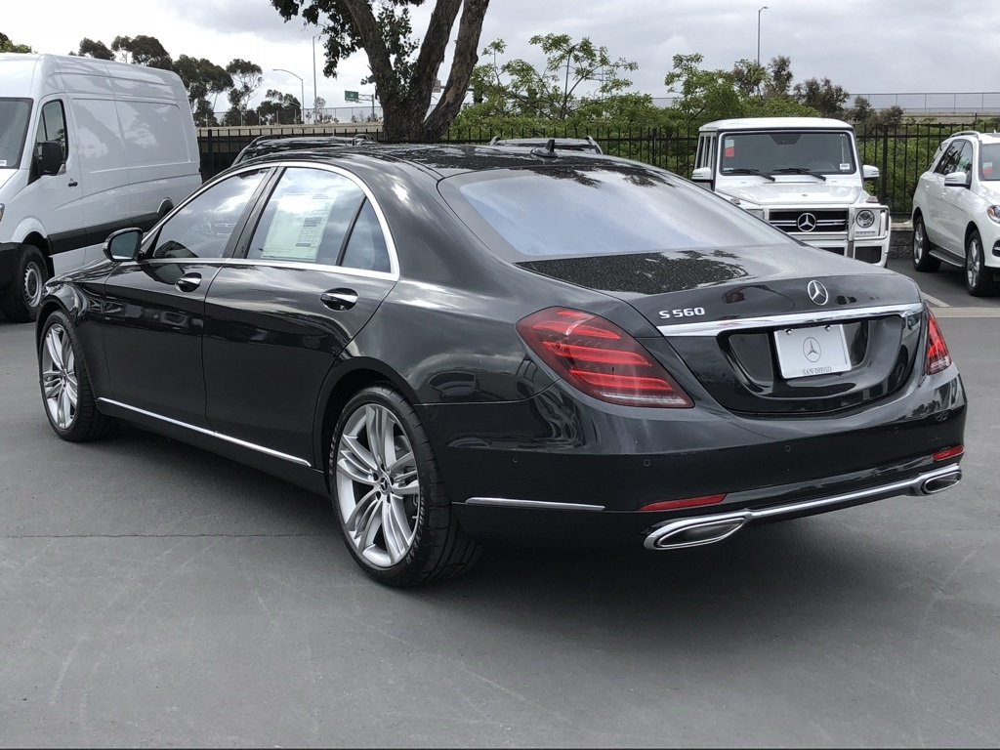
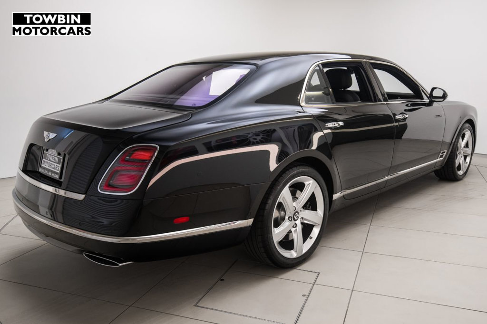

Autoturisme - automobile care, prin constructie si echipare, sunt destinate transportului unui numar redus de persoane, bagaje si/sau al bunurilor acestora, avand o capacitate de doua pana la 7 locuri pe scaune, inclusiv cel al conducatorului auto. Acestea se pot conduce cu categoria de permis auto B.
Automobilul, sau mai familiar masina, este un vehicul cu patru (rar, trei, sase) roti, actionat de un motor cu ardere interna, cu abur, cu electricitate sau aer comprimat. Are scaune pentru conducator si pentru cel putin un pasager. Automobilele sunt de obicei construite pentru a calatori pe drumuri, dar exista unele, mai ales vehicule utilitare, care permit calatorii in afara drumurilor - (off-road). Drumurile si autostrazile sunt folosite in comun cu alte vehicule, cum sunt motocicletele si tractoarele. Un automobil tipic are un motor cu ardere interna si patru roti, insa au aparut pe piata si masini cu motoare hibride, cu gaz sau electrice. Au fost construite si autovehicule cu trei roti, dar nu sunt prea raspandite din cauza problemelor de stabilitate. in anul 2007 in lume existau aproape 800 de milioane de masini in circulatie (majoritatea in emisfera nordica) iar 42 de milioane de masini noi erau produse in fiecare an. in anul 2050 se aproximeaza ca vor exista 4 miliarde de automobile la nivel mondial.
Istoric
In 1769, francezul Nicolas-Joseph Cugnot realizeaza un vehicul cu trei roti propulsat prin forta aburului. in 1801, englezul Richard Trevithick realizeaza un fel de locomotiva, numita Puffing Devil, dar care putea circula si pe drumurile rutiere. Contributii de pionierat in domeniul motoarelor cu ardere interna au adus: Nicéphore Niépce, François Isaac de Rivaz, Gustave Trouvé si altii. insa inventatorul automobilului in acceptia moderna este considerat Karl Benz. in 1878, acesta proiecteaza un nou tip de motor cu ardere interna, mult imbunatatit si care va fi patentat un an mai tarziu.
Sasiu
Sasiul automobilului este ansamblul organelor si instalatiilor care efectueaza preluarea si transmiterea energiei mecanice de la motor la rotile motoare, conducerea automobilului, sustinerea si propulsia lui. Se compune din transmisie, sistemul de conducere, organele de sustinere, organele de propulsie si instalatiile auxiliare.Mai tine si motorul si caroseria.
Sistem de transmisie
Transmisia sau sistemul de transmisie preia, transmite, modifica si distribuie momentul motor la rotile motoare ale automobilului.
Sistem de conducere
Sistemul de conducere asigura deplasarea automobilului pe traseul dorit.Este compus din mecanismul de directie si sistemul de franare.
Sistem de sustinere
Organele de sustinere suporta greutatea automobilului si preiau fortele rezultate din propulsie franare si rezistentele ce apar in deplasarea pe drum a automobilului.Cuprind cadrul, carterele puntilor si organele de suspensie.
Sistem de propulsie
Sistemul de propulsie tansforma miscarea de rotatie in miscare de translatie si ajuta automobilul sa se sprijine pe drum sau pe sol.
Instalatii auxiliare ale sasiului
Instalatiile auxiliare asigura confortul, siguranta circulatiei si controlul exploatarii automobilului. Ele sunt instalatia de iluminat, instalatia de semnalizare, instalatia de incalzire, instalatia de aerisire, stergatoarele de parbriz, etc.
Microturisme-cilindree:200-250 cm^3 (1-2 locuri)

Mici-cilindree:500-1000 cm^3(2-4 locuri)
Mijlocii-cilindree:1000-2000 cm^3(4-5 locuri)
Mari-cilindree:2000–4000 cm^3(4-5 locuri, de exemplu limuzinele)
Foarte mari-cilindree:3000-8000 cm^3(4-7 locuri)
